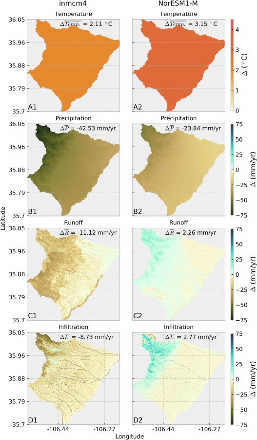
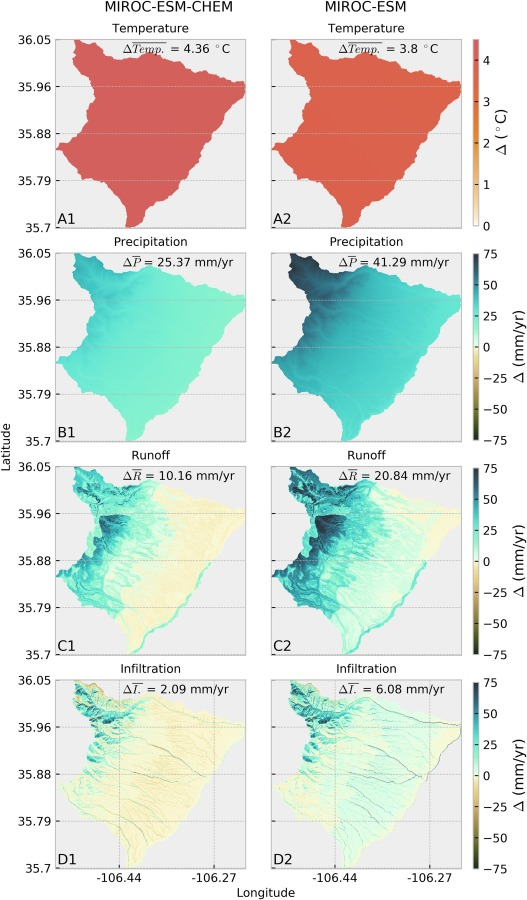
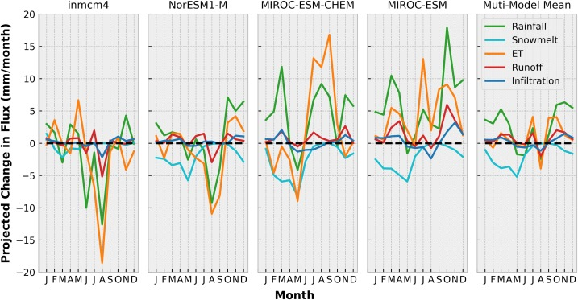
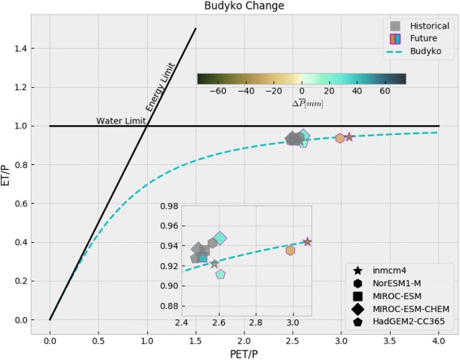

Geospatial Data Scientist | Climate & Energy | Hydrology
We used the INFIL, a grid-based,distributed parameter watershed model to model the hydrology of the area surrounding Los Alamos National Laboratory. We used earth system model temperature and precipitation output for both a historical period (1979-1999) and a futuure period (2040-2069). The INFIL model output can then tell us how the hydrologic conditions of the pajarito plateau will change given changes to the climate. The following image shows the earth system model outputs for four models that represent warm-wet, warm-dry, hot-wet, and hot-dry forecasts. These forecasts represent the bounds of uncertainty between different earth system models.

The following figures show the geographic changes in hydrologic conditions based on four scenario described above. We show changes in runoff and infiltration for each scenario.
 The next figure shows the temporal changes in climate in hydrology by month.
Lastly, we can summarize changes in hydro-climatolgy using the Budyko curve which analyzes whether a system is more water limited or more radaion limited. The y-axis shows what proportion of precipitation get evaporated and the x-axis shows the potential evaporation divided by precipitation or how much radiation is available relative to how much water is available. All locations on Earth fall along what is called the budyko curve (blue line). Locations falling on the left portion of the curve are radiation limited (there is not enough radiation to evaporate all of the precipitation), while locations falling along the right portion of the curve bounded by the water limit are water limited. The pajarito plateau, being an high-elevation arid region, is firmly within the water limited portion of the curve. We can see that four out of five models move right along the x-axis in the future. Even 2 of the 3 models that exhibit increasing precipitation also exhibit increasing radiation that pushes the scenario into a more water limited state. Vertical changes along the curve are smaller and more difficult to interpret. Changing pathways from snow to rain may lead to changes in infiltration at high elevation that may contribut to less water being evaporated or sublimated. Or difference in seasonality in the future rainfall may account for less or more actual evaporation in the system. Overall this analysis points toward a drier future for the pajarito platuea despite large uncertainties in precipitation. Increased temperature in the region will drive increases in evaporation even in the wettest scenarios.
For more detail and discussion on this work, check out our manuscript published in the Journal of Hydrology: Regional Studies
Future Water resources shifts in the high desert Southwest of Northern New Mexico: USA